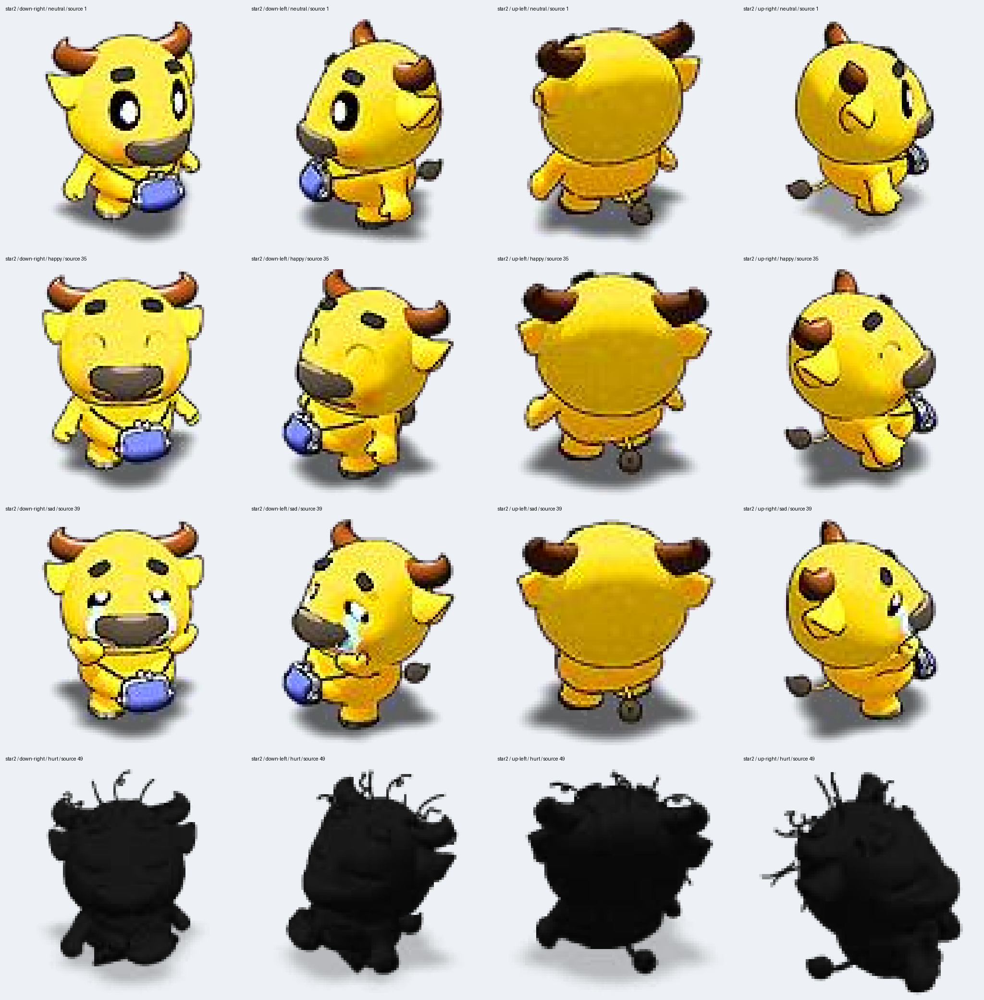

<!doctype html><html lang="zh-CN"><meta charset="utf-8"><meta name="viewport" content="width=device-width,initial-scale=1"><link rel="icon" href="data:,"><title>阿牛完整人物素材验收</title><style>
*{box-sizing:border-box}body{margin:0;background:#18212c;color:#edf3f7;font:16px system-ui}main{max-width:1280px;margin:24px auto;padding:0 20px}h1{font-size:25px}p{line-height:1.7;color:#bfd0dd}nav,.controls{display:flex;gap:10px;flex-wrap:wrap;margin:18px 0}button,select{font:inherit;background:#294258;color:white;border:1px solid #66849c;border-radius:6px;padding:8px 12px;cursor:pointer}input{flex:1}canvas{display:block;width:100%;height:auto}#stage{border-radius:12px;overflow:hidden}.directions{display:flex;justify-content:space-around;padding:10px}img{max-width:100%}a{color:#9ed6ff}
.materials-grid{display:grid;grid-template-columns:repeat(auto-fit,minmax(230px,1fr));gap:14px}.materials-grid figure{margin:0;padding:12px;background:#263646;border:1px solid #51697c;border-radius:10px;text-align:center}.materials-grid img{width:100%;height:180px;object-fit:contain;display:block;background:#dce6ed;border-radius:5px}.materials-grid canvas{width:100%;height:auto}.materials-grid figcaption{padding-top:10px;color:#c5d8e6}.badges{grid-template-columns:repeat(auto-fit,minmax(130px,1fr))}.badges img{height:100px}h2{margin-top:40px;font-size:21px}</style><main><h1>阿牛 · 完整人物素材候选</h1><p>本轮只推进阿牛。阿牛缺件已补齐，其他人物继续暂停生图。检查四向身份、手脚接缝、自然移动、表情与相关界面素材；美术仍待逐项验收。</p><nav><button id="natural">自然移动</button><button data-action="walk">行走</button><button data-action="neutral">待机</button><button data-action="ready">准备</button><button data-action="happy">喜悦</button><button data-action="sad">悲伤</button><button data-action="hurt">受伤</button><button data-action="cheer">欢呼</button></nav><div id="stage"></div><div class="directions"><span>右下</span><span>左下</span><span>左上</span><span>右上</span></div><div class="controls"><button id="pause">暂停</button><label>速度 <select id="speed"><option>.25</option><option>.5</option><option selected>1</option></select></label><input id="scrub" aria-label="动作进度" type="range" min="0" max="1000" value="0"><span id="status">加载中</span></div><section id="derived"></section><details><summary>原动作对照</summary></details><p><a href="role-02-rig.json">分件来源与参数</a></p></main><script type="module" src="./runtime.js"></script></html>
